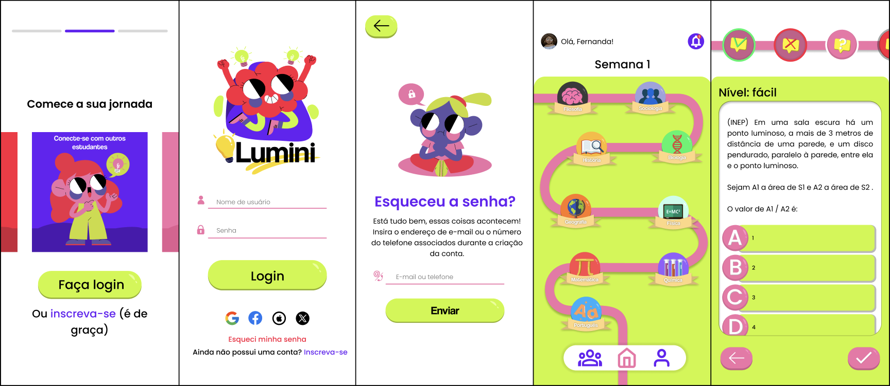

Product Design · UX Research · UI · Mobile
Lumini
Trilha de estudo gamificada para preparar jovens de baixa renda para o ENEM.

Sobre o projeto
Projeto desenvolvido durante minha experiência de estágio em Product Design na Compass UOL, como parte de uma proposta de projeto de produto. O objetivo era criar uma solução que auxilie no processo de preparação para o ENEM. A partir do contexto de desigualdade no acesso a materiais e cursos preparatórios, o desafio foi pensar em uma experiência que tornasse o estudo mais acessível, organizado e motivador, considerando também dificuldades de rotina e de acompanhamento dos conteúdos.
Pesquisa e solução
A pesquisa combinou desk research, questionário online, benchmarking e construção da jornada do usuário. A análise ajudou a identificar dificuldades relacionadas à organização dos estudos e oportunidades de trabalhar com progressão e gamificação de forma mais direcionada. A solução foi estruturada como uma trilha de estudos, na qual as disciplinas são organizadas por níveis de dificuldade e o progresso é apresentado visualmente. A experiência também utiliza questões no formato do ENEM e feedback imediato para orientar o estudante ao longo da jornada.
Validação
Foram realizados testes de usabilidade com apoio de mapas de calor, permitindo observar tanto o comportamento dos usuários quanto os pontos de maior interação na interface. Durante os testes, foram identificados problemas na identificação de alguns ícones, especialmente o utilizado para representar Matemática. A partir desse resultado, foram adicionados rótulos textuais aos ícones, tornando a identificação das disciplinas mais clara.